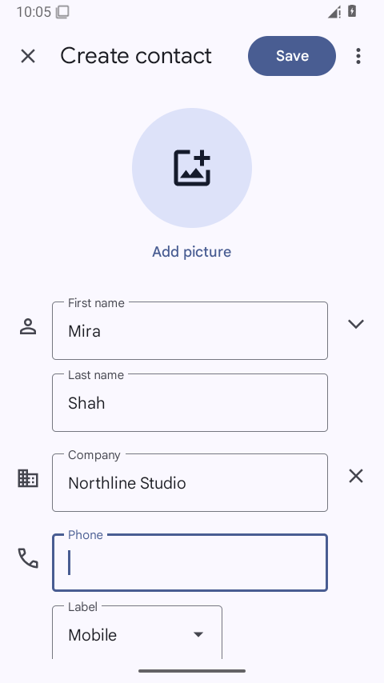

Android 15 / Apple Silicon
A fresh fork.
A verified tap.
On an M1 Pro, a fresh Android child restored an unsaved Contacts draft and acted on it in 1.145 seconds. The clock includes checking the screen.

The fastest run
Where the second went.
The host clock starts before the listener, disk clones and child process exist. The last 265 ms include acquiring the rendered frame and checking the pixels.
- Private disks and new process
- Guest connects
- Touchscreen tap sent
- Android tree confirms Phone focus
- Rendered underline verified
19-second film
Watch the focus change.
A slowed replay pairs the measured milestones with the two recorded frames. The on-screen clock shows elapsed benchmark time.
Download MP4 ↓Measurement notes
What the result covers.
One host, one task
Four vCPUs, a 2.5 GiB Android guest and the M1 Pro GPU. The child reopened an unsaved synthetic Contacts draft. Its live tree and full-resolution frame both had to show Phone focused.
Fresh child, warm host caches
The source checkpoint and page-ordered RAM image were prepared once. Each request created a new child. The first launch of a newly staged executable in the companion Android-gesture series took 14.511 s.
Reproduce the run
The repository includes emulator patches, the guest observer, checkpoint preparation steps, failed attempts and the original image and XML evidence.